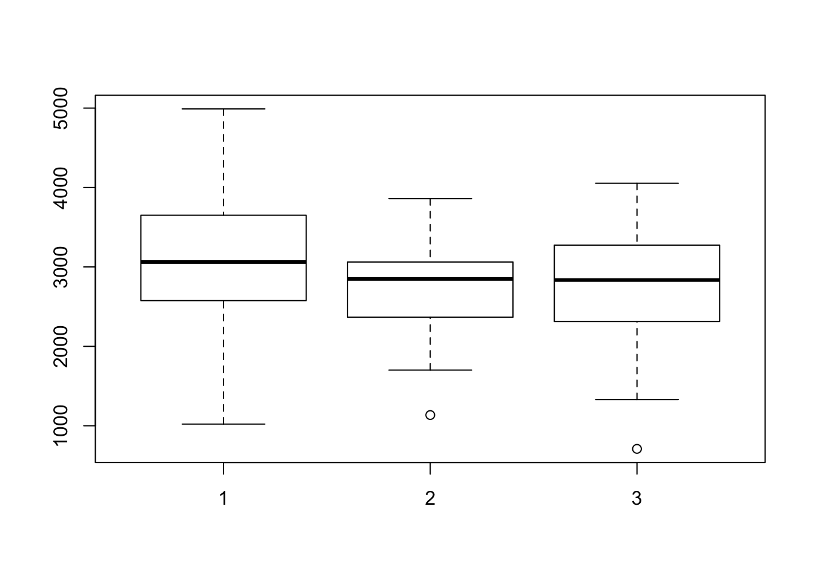
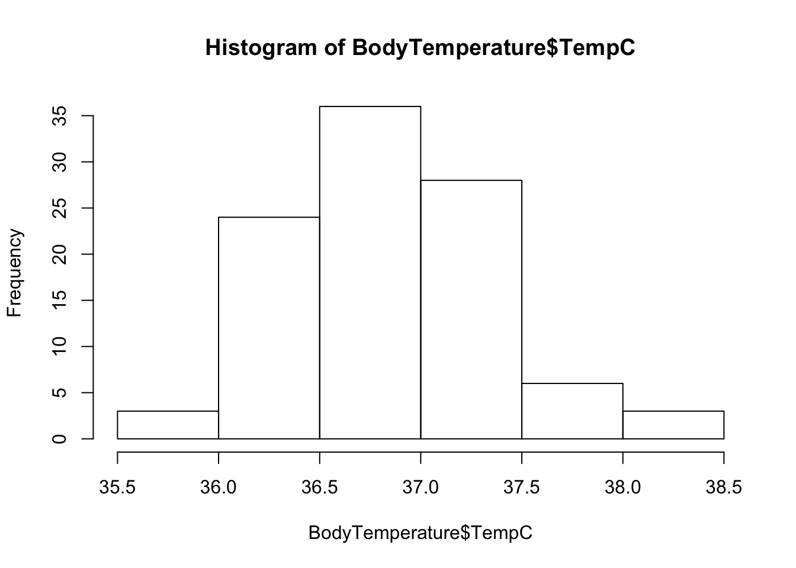
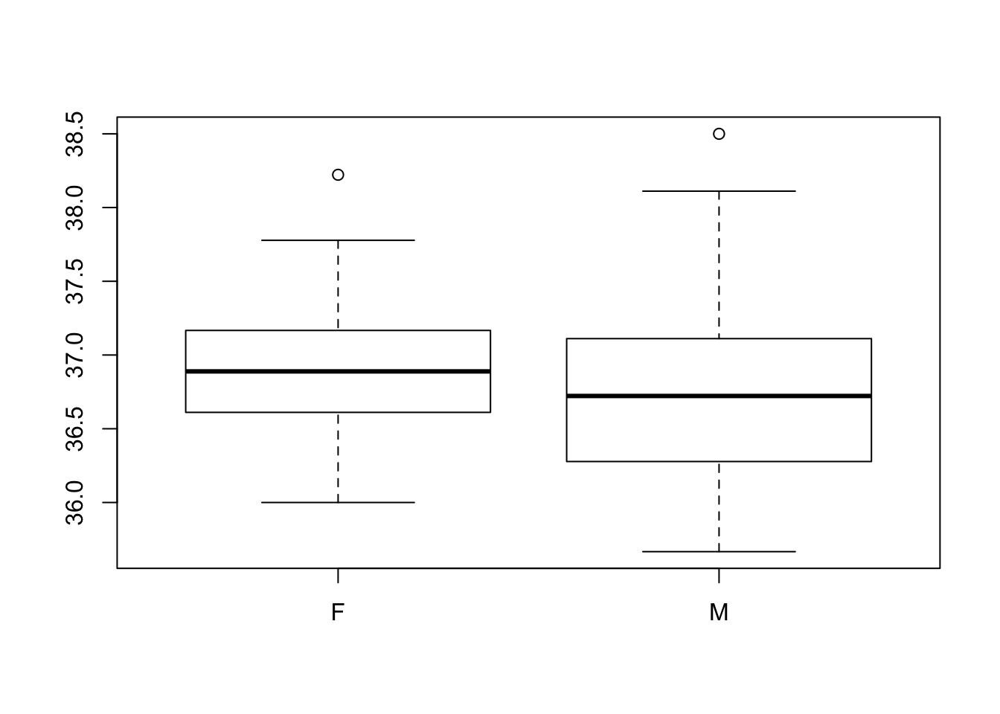
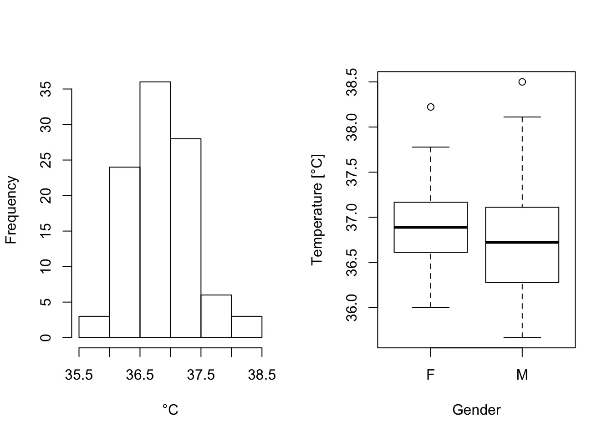
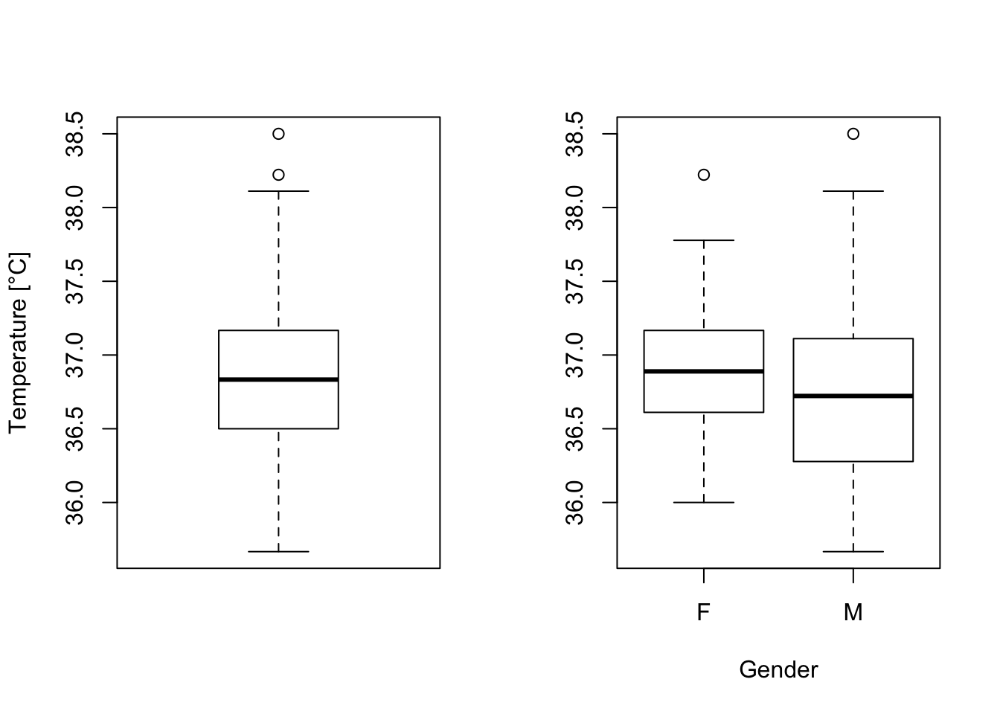
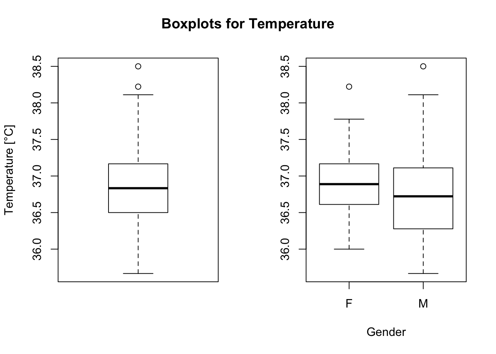
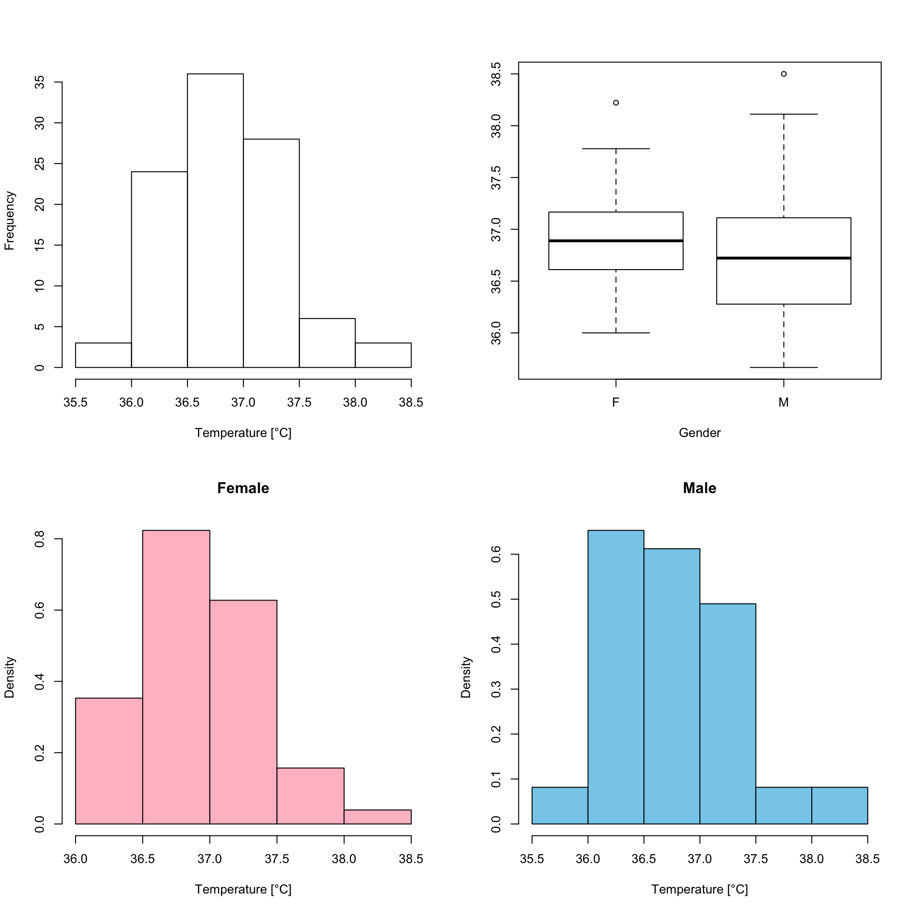

Chapter 4 Visualizzare i dati
 This John Snow knew something!
This John Snow knew something!
La visualizzazione dei dati permettere di individuare trend, connessioni e carpire informazioni dai dati che in forma tabulare non sono ovvie.
I comandi che seguono aiutano in tali indagini. Tutti questi comandi possono essere personalizzati usando diversi colori, personalizzando le label degli assi o affiancando le immagini.
Un pacchetto che permette non solo di produrre immagini (un po’ più belle), ma anche di utilizzare funzioni avanzate è ggplot2 che però non tratteremo in questo corso.
Oltre ad introdurre alcune funzioni che permettono di ottenere dei grafici, esploreremo anche alcuni dataset.
4.1 Box plot
A lezione abbiamo già incontrato i boxplot. Usando R è molto semplice produrre dei boxplot usando gli appositi comandi. Vediamoli usando il dataset birthwt, contenuto in MASS.
library(MASS)
boxplot(birthwt$bwt)
La seguente notazione permette di produrre più boxplot relativi a bwt, divisi rispetto alla variabile race.
boxplot(bwt ~ race, data = birthwt )
Esercizio Si investighi la variabile lwt rispetto a race e smoke.
Esercizio
Si noti che il pacchetto car contiene una funzione chiamata Boxplot(), con la maiuscola, che vicino ai potenziali outliers indica l’indice dell’elemento. Si replichino i precedenti boxplot usando tale funzione.
4.2 Istogrammi e scatter plost
Usando il comando hist() è possibile ottenere degli istogrammi per le variabili, passando gli argomenti in modo analogo ai boxplot.
Analogamente, con i comandi plot(x,y) or scatterplot(x,y) è possibile rappresentare i dati come punti.
Vedremo che questo può essere molto utile per ottenere degli indizi sulle relazioni tra variabili.
4.3 Analizzare il dataset Body Temperature
BodyTemperature è un dataset che contiene la misurazione di quattro variabili (sesso, età, frequenza cardiaca e temperatura corporea ascellare) di 100 pazienti. Possiamo leggere importare il file specificando invece che il percorso, l’indirizzo url.
BodyTemperature <- read.csv(url('http://extras.springer.com/2012/978-1-4614-1301-1/BodyTemperature.txt'))Se però visualizziamo questo dataset qualosa non torna.
Il comando giusto specifica quale separatore viene considerato: in questo caso lo spazio, che è diverso da quello di default di read.csv. In modo analogo avremmo potuto leggere i dati usando read.table(). Tuttavia, controllaimo bene l’output per capire se effettivamente il dataset è stato letto nel modo giusto!
BodyTemperature <- read.table(url('http://extras.springer.com/2012/978-1-4614-1301-1/BodyTemperature.txt'))BodyTemperature <- read.csv(url('http://extras.springer.com/2012/978-1-4614-1301-1/BodyTemperature.txt'), sep= " ")Esploriamo un po’ il dataset per capirne il contenuto e le variabili
str(BodyTemperature)## 'data.frame': 100 obs. of 4 variables:
## $ Gender : Factor w/ 2 levels "F","M": 2 2 2 1 1 2 1 1 1 2 ...
## $ Age : int 33 32 42 33 26 37 32 45 31 49 ...
## $ HeartRate : int 69 72 68 75 68 79 71 73 77 81 ...
## $ Temperature: num 97 98.8 96.2 97.8 98.8 ...head(BodyTemperature)## Gender Age HeartRate Temperature
## 1 M 33 69 97.0
## 2 M 32 72 98.8
## 3 M 42 68 96.2
## 4 F 33 75 97.8
## 5 F 26 68 98.8
## 6 M 37 79 101.3names(BodyTemperature)## [1] "Gender" "Age" "HeartRate" "Temperature"Solo a scopo didattico, vediamo l’applicazione di uno dei comandi visti: levels():
BodyTemperature$GenderLong <- BodyTemperature$Gender
levels(BodyTemperature$GenderLong) <- c("Female", "Male")summary(BodyTemperature)## Gender Age HeartRate Temperature
## F:51 Min. :21.00 Min. :61.00 Min. : 96.20
## M:49 1st Qu.:33.75 1st Qu.:69.00 1st Qu.: 97.70
## Median :37.00 Median :73.00 Median : 98.30
## Mean :37.62 Mean :73.66 Mean : 98.33
## 3rd Qu.:42.00 3rd Qu.:78.00 3rd Qu.: 98.90
## Max. :50.00 Max. :87.00 Max. :101.30range(BodyTemperature[,-1])## [1] 21.0 101.3In modo analogo possiamo cercare di ottenere la distanza interquartile per i gli elementi del dataset con IQR(BodyTemperature[,2:4]), tuttavia questo ci da errore.
Possiamo aggirare questa limitazione usando il comando apply(). La stessa funzione la possiamo usare per individuare, ad esempio, il valore minimo rispetto alle variabili (numeriche) e quale indice lo assume.
apply(BodyTemperature[,-1], 2, IQR )## Age HeartRate Temperature
## 8.25 9.00 1.20apply(BodyTemperature[,-1], 2, min )## Age HeartRate Temperature
## 21.0 61.0 96.2apply(BodyTemperature[,-1], 2, which.min )## Age HeartRate Temperature
## 37 28 3Possiamo notare che la temperatura non è espressa in gradi Celsius (°C), bensì in Fahrenheit (F). Usando delle semplici operazioni di base possiamo trasformare le temperature in gradi Celsius e salvare questi nuovi dati nella colonna che chiamiamo TempC.
fromFtoC <- function(dataF) {
return((dataF - 32)*(5/9))
}
BodyTemperature$TempC <- (BodyTemperature$Temperature -32)*5/9
head(BodyTemperature)## Gender Age HeartRate Temperature TempC
## 1 M 33 69 97.0 36.11111
## 2 M 32 72 98.8 37.11111
## 3 M 42 68 96.2 35.66667
## 4 F 33 75 97.8 36.55556
## 5 F 26 68 98.8 37.11111
## 6 M 37 79 101.3 38.500004.4 Visualizzare il dataset BodyTemperature
Passiamo ora a visualizzare il contenuto del dateset.
hist(BodyTemperature$TempC )
boxplot(TempC ~ Gender, data = BodyTemperature)
Vediamo ora come affiancare diversi plot e usiamo alcuni dei parametri delle funzioni di plot.
par(mfrow=c(1, 2))
hist(BodyTemperature$TempC, main = "", xlab = "°C")
boxplot(TempC ~ Gender, data = BodyTemperature, xlab = "Gender", ylab = "Temperature [°C]")
par(mfrow=c(1, 2))
boxplot(BodyTemperature$TempC , ylab = "Temperature [°C]")
boxplot(TempC ~ Gender, data = BodyTemperature, xlab = "Gender")
par(mfrow=c(1, 2))
boxplot(BodyTemperature$TempC , ylab = "Temperature [°C]")
boxplot(TempC ~ Gender, data = BodyTemperature, xlab = "Gender")
title("Boxplots for Temperature", outer = T, line = -2)
par(mfrow=c(2, 2))
hist((BodyTemperature$TempC) , xlab = "Temperature [°C]", main = "")
boxplot(TempC ~ Gender, data = BodyTemperature, xlab = "Gender")
hist(BodyTemperature$TempC[BodyTemperature$Gender == "F"],freq = FALSE ,main = "Female", col = "pink", xlab = "Temperature [°C]")
hist(BodyTemperature$TempC[BodyTemperature$Gender == "M"],freq = FALSE ,main = "Male", col = "skyblue" , xlab = "Temperature [°C]")
Esistono altri comandi che si possono abbinare a quelli di visualizzazione visti fin qui, ad esempio abline(), text() e lines().
Esercizio Usare l’help per capire le funzionalità dei comandi precedenti e si usino per aggiungere informazioni ai grafici precedenti.
4.5 Analizzare il dataset Pima.tr2
library(MASS) # necessario per accedere al dataset
str(Pima.tr2)## 'data.frame': 300 obs. of 8 variables:
## $ npreg: int 5 7 5 0 0 5 3 1 3 2 ...
## $ glu : int 86 195 77 165 107 97 83 193 142 128 ...
## $ bp : int 68 70 82 76 60 76 58 50 80 78 ...
## $ skin : int 28 33 41 43 25 27 31 16 15 37 ...
## $ bmi : num 30.2 25.1 35.8 47.9 26.4 35.6 34.3 25.9 32.4 43.3 ...
## $ ped : num 0.364 0.163 0.156 0.259 0.133 ...
## $ age : int 24 55 35 26 23 52 25 24 63 31 ...
## $ type : Factor w/ 2 levels "No","Yes": 1 2 1 1 1 2 1 1 1 2 ...dim(Pima.tr2)## [1] 300 8names(Pima.tr2)## [1] "npreg" "glu" "bp" "skin" "bmi" "ped" "age" "type"?Pima.tr2
head(Pima.tr2)## npreg glu bp skin bmi ped age type
## 1 5 86 68 28 30.2 0.364 24 No
## 2 7 195 70 33 25.1 0.163 55 Yes
## 3 5 77 82 41 35.8 0.156 35 No
## 4 0 165 76 43 47.9 0.259 26 No
## 5 0 107 60 25 26.4 0.133 23 No
## 6 5 97 76 27 35.6 0.378 52 Yessummary(Pima.tr2)## npreg glu bp skin
## Min. : 0.000 Min. : 56.0 Min. : 38.00 Min. : 7.00
## 1st Qu.: 1.000 1st Qu.:101.0 1st Qu.: 64.00 1st Qu.:21.00
## Median : 3.000 Median :121.0 Median : 72.00 Median :29.00
## Mean : 3.787 Mean :123.7 Mean : 72.32 Mean :29.15
## 3rd Qu.: 6.000 3rd Qu.:142.0 3rd Qu.: 80.00 3rd Qu.:36.00
## Max. :14.000 Max. :199.0 Max. :114.00 Max. :99.00
## NA's :13 NA's :98
## bmi ped age type
## Min. :18.20 Min. :0.0780 Min. :21.0 No :194
## 1st Qu.:27.10 1st Qu.:0.2367 1st Qu.:24.0 Yes:106
## Median :32.00 Median :0.3360 Median :29.0
## Mean :32.05 Mean :0.4357 Mean :33.1
## 3rd Qu.:36.50 3rd Qu.:0.5867 3rd Qu.:40.0
## Max. :52.90 Max. :2.2880 Max. :72.0
## NA's :3which(is.na(Pima.tr2))## [1] 804 834 836 853 854 863 871 885 887 888 889 898 899 1101
## [15] 1102 1103 1104 1105 1106 1107 1108 1109 1110 1111 1112 1113 1114 1115
## [29] 1116 1117 1118 1119 1120 1121 1122 1123 1124 1125 1126 1127 1128 1129
## [43] 1131 1132 1133 1134 1135 1136 1137 1138 1139 1140 1141 1142 1143 1144
## [57] 1145 1146 1147 1148 1149 1150 1151 1152 1153 1154 1155 1156 1157 1158
## [71] 1159 1160 1161 1162 1163 1164 1165 1166 1167 1168 1169 1170 1172 1173
## [85] 1174 1175 1176 1177 1178 1179 1180 1181 1182 1183 1184 1185 1186 1187
## [99] 1188 1189 1190 1191 1192 1193 1194 1195 1196 1197 1198 1199 1200 1413
## [113] 1430 1468# amico di apply
lapply(lapply(Pima.tr2 , is.na),which)## $npreg
## integer(0)
##
## $glu
## integer(0)
##
## $bp
## [1] 204 234 236 253 254 263 271 285 287 288 289 298 299
##
## $skin
## [1] 201 202 203 204 205 206 207 208 209 210 211 212 213 214 215 216 217
## [18] 218 219 220 221 222 223 224 225 226 227 228 229 231 232 233 234 235
## [35] 236 237 238 239 240 241 242 243 244 245 246 247 248 249 250 251 252
## [52] 253 254 255 256 257 258 259 260 261 262 263 264 265 266 267 268 269
## [69] 270 272 273 274 275 276 277 278 279 280 281 282 283 284 285 286 287
## [86] 288 289 290 291 292 293 294 295 296 297 298 299 300
##
## $bmi
## [1] 213 230 268
##
## $ped
## integer(0)
##
## $age
## integer(0)
##
## $type
## integer(0)Cosa possiamo fare con i diversi NA?
Un’idea ovviamente è quella di rimuovere le righe dove compare un NA
data_no_Na <- na.omit(Pima.tr2)
dim(data_no_Na)## [1] 200 8Abbiamo rimosso un terzo del dataset…..
Rimuovere così tanti dati impoverisce significativamente il dataset, quindi magari si possono trovare soluzioni meno radicali.
Ad esempio, possiamo notare come gran parte dei NA siano nella variabile skin… se questa non ci interessa, possiamo evitare di rimuovere quelle righe!
data_no_Na <- na.omit(Pima.tr2[,-4])
dim(data_no_Na)## [1] 284 7In questo modo abbiamo rimosso molte meno righe. Si noti che alcune funzioni (vedi mean) hanno specifici argomenti per gestire i NA e si può quindi evitare di rimuoverli dal dataset ma gestirli i vari casi dalle funzioni
In alcuni casi, si preferisce non rimuovere alcun dato, ma piuttosto si sostituiscono i valori mancanti con informazioni prese dai dati correnti.
Ad esempio, si possono sostituire con la media, la mediana o si possono anche definire modelli più complessi per definire i sostituti.
4.6 Visualizzare il dataset Pima.tr2
Usando gli strumenti di visualizzazione visti, si esplorino le relazioni tra le variabili del dataset.
Si faccia attenzione agli NA e si confrontino i risultati nei casi in cui:
- vengono rimosse tutte le righe contenenti NA;
- vengono solo le righe contenenti NA nelle variabili di interesse;
- vengono sostituiti gli NA con la media o la mediana della variabile;
4.7 Esercizi
4.7.1 Esercizio 1
Si scarichi il dataset AstmaLOS.txt (descrizione). Dopo averlo analizzato ed aver individuato eventuali errori nei dati relativi ad age e owner.type, si analizzi e visualizzi la variabile age. Si provino almeno due tecniche di rimozione degli errori dai dati e si confrontino i risultati.
4.7.2 Esercizio 2
Si analizzi il dataset hflights e si scelga una destinazione. Si analizzino e visualizzino i dati relativi a lunghezza del volo e ritardi per tale destinazione. Inoltre si determini:
- il giorno in cui è possibile volare con minore probabilità di subire ritardo.
- il giorno in cui è possibile volare con maggiore probabilità di subire la cancellazione del volo.
4.8 Link utili
Questo sito presenta diversi datasets che possono essere interessanti da esaminare.
A questo link è possibile trovare gli appunti di un ottimo corso di data visualization (in inglese).